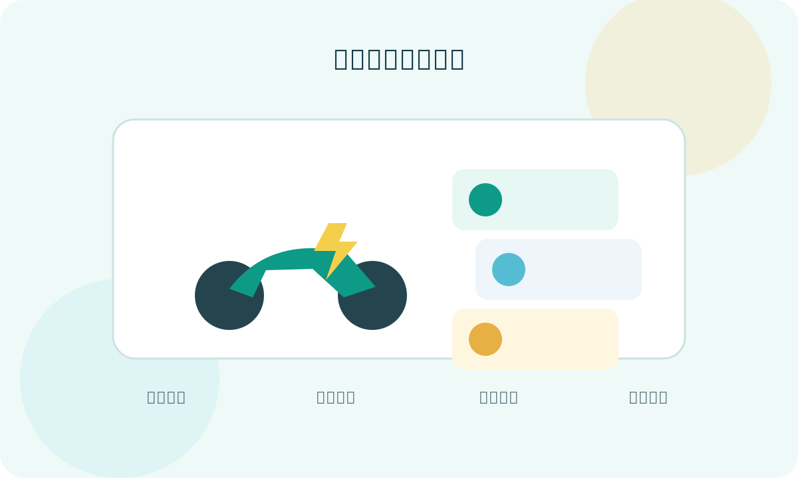
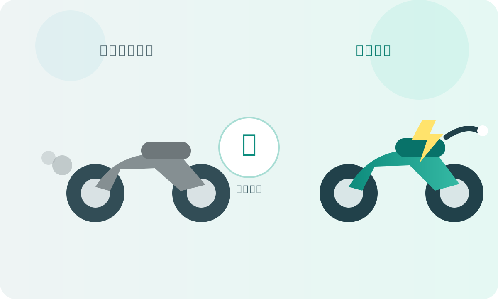
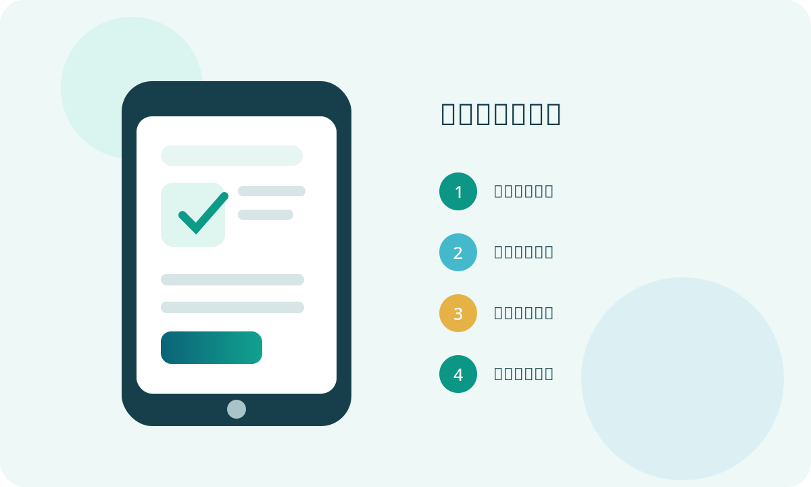
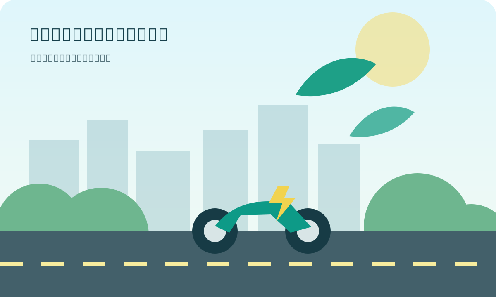

淘汰 1～5 期燃油機車
換購電動機車
最高 10,000 元
新北市補助限額 8,000 名；舊車與新車須符合年度補助計畫規定。
SUBSIDY
補助分成「新購」、「汰舊換購」及不同加碼方案。實際可領金額會依車型、資格、申請順序及中央補助條件而不同。
新北市補助限額 8,000 名；舊車與新車須符合年度補助計畫規定。
新北市補助限額 7,000 名，仍須符合設籍及購車地點等規定。
限額 4,500 名，依申請順序保留名額，用罄為止。
須汰除 2 輛老舊機車並新購 1 輛電動機車，限額 1,000 名。
新購或換購電動機車皆有加碼，官方公告為不限額；仍須符合資格。
不限名額至預算用罄，車款須符合計畫規定。

MAX EXAMPLE
新北換購最高 10,000 ＋ 早鳥 10,000 ＋ 雙汰舊 9,000 ＋ 經濟部 7,000 ＋ 環境部相關獎勵 3,600 ＝ 最高 39,600 元。 實際仍依各機關審核及適用資格為準。
ELIGIBILITY
以下整理個人申請最常遇到的基本條件。
申請對象須為年滿 18 歲的中華民國國民；事業或法人另依計畫規定。
購買電動機車時，申請人須已設籍新北市滿一年。
新購電動機車須設籍新北市，購車發票日期須在 115 年度內。
開立購車統一發票的經銷商須在新北市辦理商業登記。
申請汰舊換購方案時，欲淘汰的燃油機車車籍須符合新北市補助規定。
一般及加碼名額有限，依申請順序至名額或預算用罄為止。
QUICK CALCULATOR
這是便民試算，不代表正式核定結果；中央補助與加碼仍須符合各自資格。
已勾選：新北換購補助
此試算不含中低收入戶加碼，且各項能否併領須以主管機關審核為準。WHY REPLACE
新北市透過定檢、稽查及補助等方式，鼓勵高污染老舊機車維護或汰換。

新北市環保局指出，柴油車及 1～4 期機車是 PM2.5 排放來源之一。 透過補助與多元管制，可促使車主維護保養或汰換高污染車輛。



APPLICATION
115 年採兩階段線上申請，先取得名額，再依通知完成第二階段文件上傳。
確認申請方案、設籍條件、車款與剩餘名額。
115/1/1～115/12/31 填寫基本資料並上傳必要證明。
第一階段審核通過後，以電子郵件通知受理編號及第二階段期限。
依通知期限上傳購車、領照、汰舊及撥款等相關文件。
資料經審查通過後，依規定辦理補助款撥付。
AIR QUALITY
以下採新北市環保局公開的 1～4 期機車數量，呈現長期汰舊與污染改善趨勢。
FAQ
要依申請方案判斷。115 年計畫的「老舊機車」定義為出廠滿 10 年以上的燃油機車；不同補助項目另有期別、車籍及車款等條件。
新北市補助計畫規定，開立購車統一發票的經銷商須在新北市辦理商業登記，新車並須設籍新北市。
新北市 115 年官方方案以「早鳥加碼結合雙汰舊」說明最高補助情境，但實際仍須同時符合各方案資格且加碼名額尚有餘額。
115 年補助採兩階段線上申請，且名額依申請順序保留。建議購車前先確認官方補助資訊、車款、資格及名額，避免影響權益。
可能。官方公告明載年度補助及加碼名額有限，依申請順序至預算或名額用罄為止，因此不一定會等到年底才截止。
OFFICIAL SERVICES
本頁為網站範本，正式發布前請更新聯絡方式及公告內容。
本頁依新北市政府環境保護局、機車汰舊換新補助網及中央機關公開資訊整理。 補助名額、中央補助金額、車款、申請期限及個案資格可能調整， 正式申請前請務必以主管機關最新公告與線上系統顯示為準。